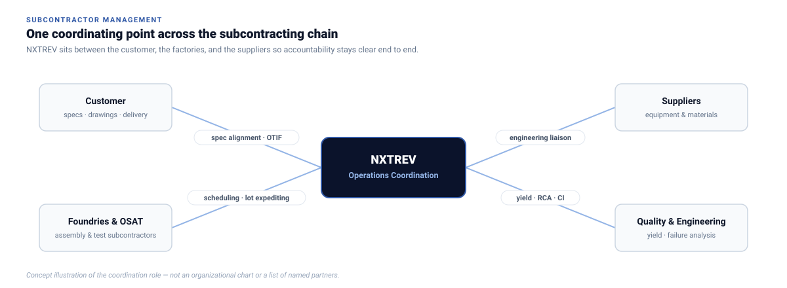
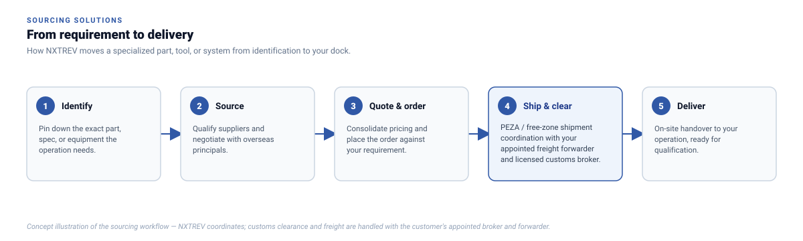

Operations & Supply Chain
Subcontractor Management & Sourcing
Assembly and test operations experience applied to your subcontractors, and sourcing for the equipment, spares, tooling and consumables your line runs on.
Factory Operations Leadership
Subcontractor Management and Operations Capability
Backed by 15+ years of semiconductor Assembly & Test operations leadership from International Rectifier (Infineon Technologies).
NXTREV supports customers in managing semiconductor-related subcontracting work through strong experience in assembly, test, manufacturing coordination, and supplier execution.
This capability is backed by leadership experience from Elmer Baladjay, who has more than 15 years of semiconductor Assembly and Test Operations experience from International Rectifier, now part of Infineon Technologies.
With this background, NXTREV is able to coordinate between customers, suppliers, subcontractors, and technical teams with a practical understanding of factory operations, quality expectations, and delivery requirements.
| Assembly & Final Test | Full packaging, electrical screening, quality gating, and yield monitoring. Factory-floor discipline and line management. |
|---|---|
| Subcon Coordination | Production scheduling, lot expediting, and clear counterparty accountability. Production schedule governance and tracking. |
| Yield & Process Quality | Root cause failure analysis, continuous improvement, and scrap reduction. Failure analysis and continuous quality gains. |
| Capacity & Utilization | Line balance optimization, OEE management, and equipment utilization planning. |
| Supplier Collaboration | Engineering liaison between foundries, OSAT subcontractors, and end-customers. Technical alignment between principals and lines. |
| Customer Alignment | Ensuring customer specifications match manufacturing control plans and drawings. Tight compliance with product specifications. |
| Cost & Delivery Monitoring | Milestone tracking, on-time in-full (OTIF) execution, and cost discipline. Disciplined monitoring from PO to sign-off. |
Consult Our Team
Discuss your assembly or subcontracting requirements directly.

Supply Chain & Procurement
Sourcing Solutions
Parts, tooling and capital equipment, identified, negotiated and delivered to your line.
NXTREV Technology Inc. sources what a backend line runs on, from a single hard-to-find spare to capital machinery, for one-off needs or recurring supply.
We handle technical identification, overseas principal negotiation, and PEZA / free-zone shipment coordination. Import and export documentation is handled together with the customer's appointed freight forwarder and licensed customs broker.
| Capital Equipment & Spares | Direct sourcing of specialized capital machinery, replacement tester instruments, handler modules, vacuum generators, and obsolete boards from global qualified networks. Machinery spares: hard-to-find motors, vacuum pumps, pneumatic cylinders. |
|---|---|
| Precision Tooling & Fixtures | Custom CNC machined guide tracks, vacuum collets, rubber pick tips, trim & form die inserts, and Kelvin contact assemblies manufactured to micron tolerances. Custom collets, rubber tips, carbide die punches. |
| Cleanroom & Packaging Consumables | Static-shielding carrier tapes, antistatic cover tapes, moisture barrier foil bags, humidity indicator cards, and specialized semiconductor cleaning solvents. |
| Free-Zone Shipment Coordination | PEZA documentation and coordination with customer-appointed forwarders and brokers. |

Need a printable overview for purchasing or engineering evaluation?
Access our consolidated 2026 Equipment & Solutions Line Card matrix in a clean, print-ready layout.